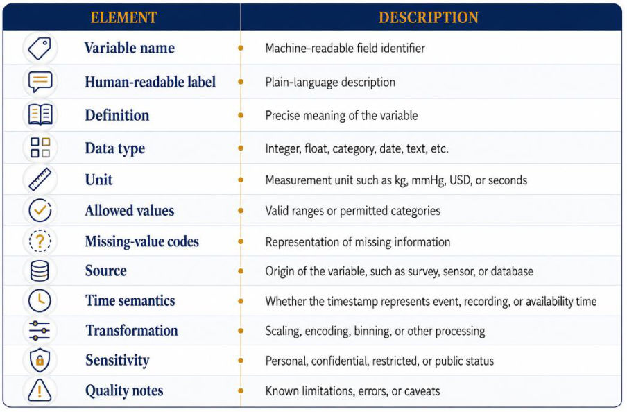
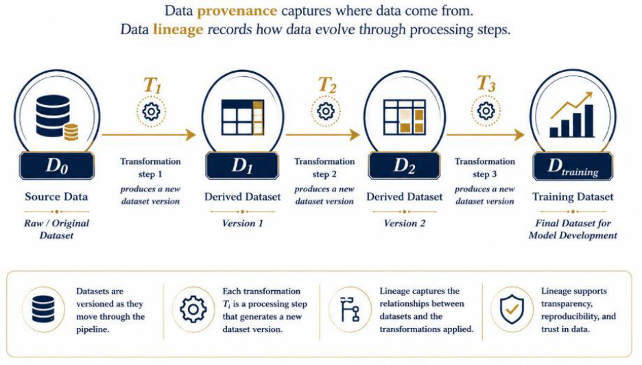
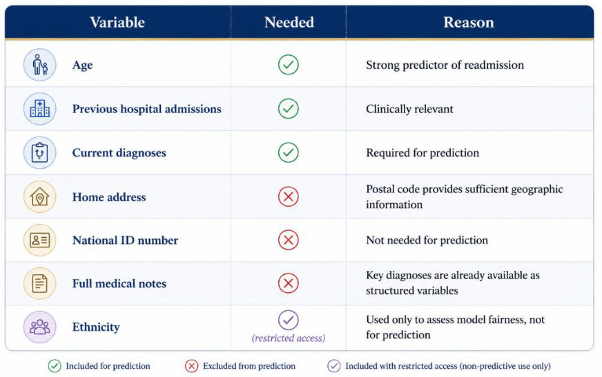
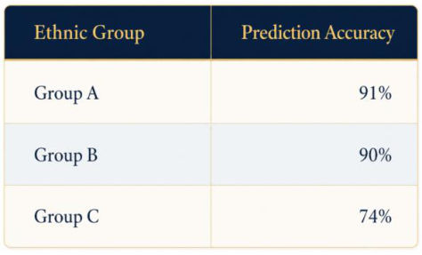
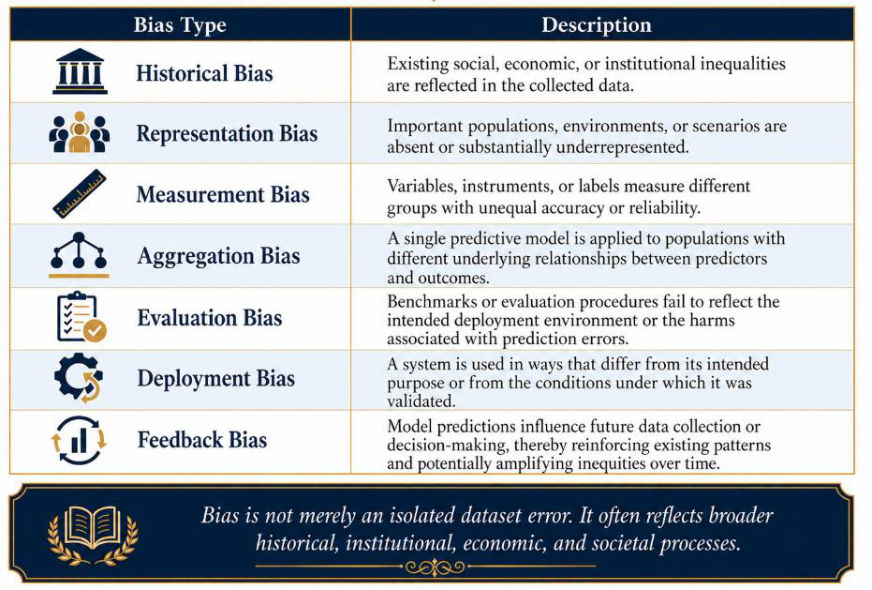
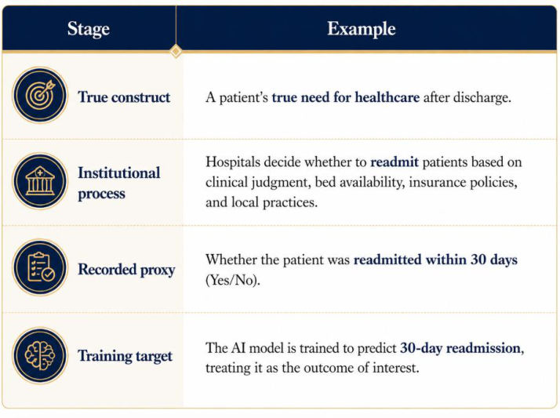
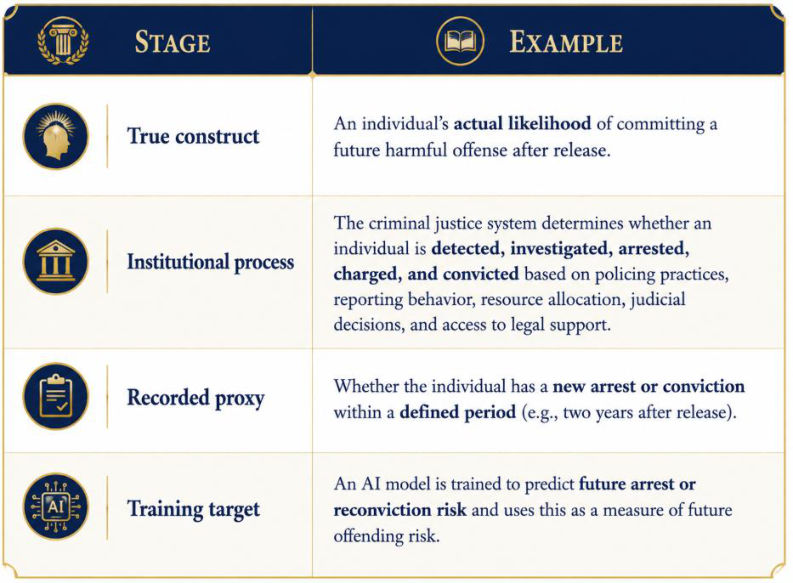
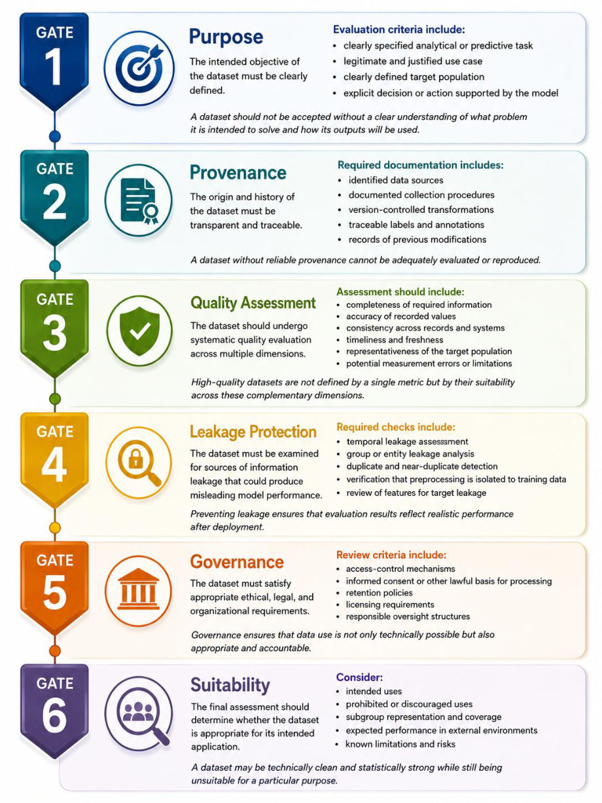
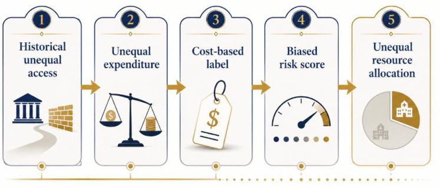

M2 · Part C — Documentation, Governance & Ethics, Case Studies
Module 2 notes, Sections 2.7–2.11 (PDF pages 81–120, printed pages 249–288). Datasheets, data dictionaries, provenance and lineage, consent and licensing; governance, privacy, sensitive attributes, bias, fairness; the "good dataset, misleading AI" pattern; the six-gate acceptance framework; and the three case studies.
Parts A and B were about whether the data are correct and the evaluation honest. Part C asks whether the data are understood, permitted and fair to use — and shows, through three real cases, that the most damaging failures happen before model fitting: when someone picks a proxy, a sample or a benchmark.
1. Data documentation (2.7)
Documentation tells users what the data contain, why they were created, how observations were selected, how labels were made, what preprocessing was applied, which uses are appropriate or to be avoided, who maintains them, and what ethical/legal restrictions apply. It does not eliminate bias — it makes assumptions and limitations transparent.
1.1 Datasheets for datasets (Gebru et al.)
Inspired by datasheets for electronic components. Seven areas:
| Area | Key content |
|---|---|
| Motivation | Why created? Funder? Task/gap addressed? Intended users? |
| Composition | What is an instance? How many? Which populations/environments/periods? Labels? Sensitive information? |
| Collection process | Who collected; instruments; sampling strategy; informed consent; compensation; known limitations |
| Preprocessing/cleaning | Records removed; imputation; normalization/transformations; label review/adjudication; de-identification |
| Intended & discouraged uses | Intended tasks, recommended users, limitations, prohibited uses, unreliable contexts |
| Distribution & licensing | Access procedure, licence, redistribution, commercial restrictions, attribution, privacy/security limits |
| Maintenance | Owners/maintainers, error reporting, update schedule, withdrawal procedure, versioning, revision tracking |
Setting (notes, Example 56): A research group downloads a publicly available medical imaging dataset to train a disease-detection model. What do the access, licence, attribution and privacy terms in its documentation prevent?
Worked answer:
Access needs custodian approval and a data-use agreement; licence: academic only, no commercial use; must cite; images cannot be redistributed. Without this, another organization might redistribute publicly, commercialize, or omit attribution → privacy, IP and terms violations.
1.2 Data dictionaries (Figure 18)


A data dictionary is field-level documentation (a datasheet is dataset-level). Each variable: variable name (machine-readable), human-readable label, definition, data type, unit, allowed values, missing-value codes, source, time semantics (event vs recording vs availability time), transformation, sensitivity, quality notes.
1.3 Provenance and lineage (Figure 19)
Data provenance (notes §2.7.3): “Data provenance describes the origin of data and the processes used to generate them.”
Data lineage (notes §2.7.3): “Data lineage records how data evolve as they move through processing pipelines.”
Provenance: where data came from — origin, history, chain of custody (how, when, where, by whom collected and processed).
Lineage: how data evolve through processing — , each transformation producing a new version.


For every transformation record: input dataset version, code/software version, processing parameters, output version, execution timestamp, responsible person/system, validation results. Provenance supports reproducibility, debugging, auditing, correction, rollback, regulatory compliance and suitability assessment. A trained model should be traceable to the exact dataset version, preprocessing and code.
1.4 Consent documentation (2.7.4)
"Consent obtained: Yes/No" is not enough. Record: information given to participants; voluntariness; purposes explained; data linkage; commercial use; international transfer; withdrawal rights and what happens to derived models after withdrawal; vulnerable populations; broad vs specific consent. WHO guidance stresses autonomy, privacy, confidentiality and informed consent.
1.5 Licensing, copyright vs privacy, compatibility (2.7.5–2.7.7)
- A licence sets conditions for access, use, modification, redistribution: commercial use, modification, redistribution, attribution, derivative works, geography, research-only, no re-identification, no surveillance/discrimination uses.
- Copyright and privacy are different: an openly licensed dataset can still contain personal data that restricts uses; de-identified data can still be under copyright, contract or institutional restrictions.
- Licence compatibility: combining datasets with incompatible licences can block redistribution, publication or deployment; the combined data inherit the most restrictive terms. Record licence, version and restrictions with the artifact.
Setting (notes, Example 57): A university builds a model to predict early signs of Alzheimer's disease from MRI scans of 5,000 participants. Years later a technology company wants to use the dataset for a commercial product shared internationally, and a researcher publishes it combined with an open dataset. What consent and licence problems arise?
Worked answer:
Record says only "Consent obtained: Yes", but the form allowed academic research, imaging analysis, no commercial use, no transfer abroad. A company later wants a commercial product shared internationally → violates the actual agreement (commercial, international, AI development not explained). Licence: research-only, no commercial deployment, no redistribution of raw images, no re-identification. A researcher merges it with an open dataset and publishes the combination → breaks the licence (no redistribution; combined data inherit restrictions).
Key lesson: consent = what participants agreed to; licensing = what users are legally permitted to do. Access ≠ unrestricted ethical or legal use.
Datasheet (dataset-level, 7 areas) + data dictionary (field-level, 12 elements) + provenance (origin) + lineage (transformations) + consent record (purposes, linkage, commercial, international, withdrawal, vulnerable) + licence (and compatibility).
2. Governance and ethics (2.8)
2.1 Data governance
Data governance (notes §2.8.1): “Data governance is the framework of policies, roles, processes, and technical controls through which data are managed, protected, and used throughout their lifecycle.”
The framework of policies, roles, processes and technical controls through which data are managed, protected and used across their lifecycle. Questions: who owns/stewards the data; who may access; for what purposes; who approves new or secondary uses; retention period; how quality issues are corrected; how incidents are handled; how model outputs are monitored and audited; who is ultimately accountable. Governance must be implemented in procedures, safeguards and monitoring — not just written policy.
2.2 Privacy, de-identification, lifecycle, minimization
Privacy: an individual's ability to control, understand and be protected from inappropriate collection, processing, inference, sharing or disclosure. Risks: direct identification; re-identification; linkage attacks; membership inference; reconstruction; inference of confidential attributes; unauthorized secondary use; surveillance; indefinite retention.
Removing names/IDs does not make data anonymous: combinations of age, location, dates or rare characteristics can uniquely identify people when linked with external data. Treat de-identification as risk reduction, not a guarantee.
Lifecycle safeguards: collect only what's necessary; purpose limitation; role-based access; encryption at rest and in transit; secure computing environments; publish aggregates; differential privacy; federated/distributed learning; retention limits; audit logs; incident response. OECD principles: lawful processing, purpose limitation, data minimization, transparency, security, individual rights, accountability.
Data minimization (notes §2.8.5): “Data minimization is the principle that organizations should collect, retain, and process only the information reasonably necessary to achieve a clearly defined and legitimate purpose.”
Collect, retain and process only what is reasonably necessary for a defined, legitimate purpose: collect only if Benefit > Risk. Ask: genuinely necessary? less sensitive alternative? long-term retention needed? restrict access? raw values needed? needed for fairness auditing even if excluded from prediction?


2.3 Sensitive attributes and proxies
Sensitive: race/ethnicity, religion, health, disability, gender, orientation, political beliefs, precise location, biometrics, financial info, immigration status.
Sensitive attributes (notes §2.8.6): “Sensitive attributes are variables whose misuse may expose individuals to discrimination, privacy violations, or other forms of harm.”
Removing sensitive attributes (notes §2.8.6): “Excluding a sensitive variable from a predictive model does not necessarily prevent discriminatory outcomes.”
Other variables act as proxies: — postal code, school, language, purchasing behaviour, occupation, healthcare utilization.
Setting (notes, Example 59): A bank removes race from the training data of its home-loan approval model, but the model still uses postal code, household income and occupation. Is the model now free of racial bias?
Worked answer:
Postal code (historical residential segregation), income and occupation stand in for race → affluent postcodes approved, disadvantaged neighbourhoods rejected at similar financial profiles.
Setting (notes, Example 60, Table 26): A hospital readmission model does not use ethnicity as a feature. After deployment, accuracy is 91% for Group A, 90% for Group B and 74% for Group C. Why does the hospital still need ethnicity data?
Worked answer:
Readmission model excludes ethnicity from inputs; audit shows accuracy 91% / 90% / 74% for Groups A/B/C. Without recorded ethnicity the Group C gap would be invisible. Policy: exclude from prediction, retain with restricted access for fairness evaluation and monitoring, strict access/security controls. Governance distinguishes use for prediction, fairness evaluation, monitoring, and access/retention/security.


2.4 Seven types of bias (Table 27)


| Bias | Description | Example 61 |
|---|---|---|
| Historical | Existing social/economic/institutional inequality reflected in data | Low-income patients historically referred to specialists less → model predicts fewer referrals |
| Representation | Populations/environments/scenarios absent or under-represented | Skin-cancer detector trained mostly on light skin |
| Measurement | Variables/instruments/labels measure groups with unequal accuracy | Wearable heart rate less accurate for older adults |
| Aggregation | One model for populations with different predictor–outcome relationships | One kidney-risk model for ages 18–90 performs poorly for both young and old |
| Evaluation | Benchmark doesn't reflect deployment or the harms of errors | Pneumonia model tested on urban high-quality X-rays, used in rural clinics |
| Deployment | Used differently from its intended/validated purpose | Nodule assistant used as sole decision-maker without radiologist review |
| Feedback | Predictions shape future data and reinforce patterns | Predictive policing: more patrols → more recorded incidents → "confirmed" high risk |
Bias is not merely a dataset error — it reflects broader historical, institutional, economic and societal processes.
2.5 Fairness metrics
Fairness (notes §2.8.8): “Fairness is a context-dependent concept that cannot be adequately characterized by a single universal metric.”
Demographic parity (notes §2.8.8): “Predicted positive rates are equal across groups.”
Equal opportunity (notes §2.8.8): “True positive rates are equal across groups.”
Equalized odds (notes §2.8.8): “Equalized odds require equality of both true positive rates and false positive rates across demographic groups.”
Predictive parity (notes §2.8.8): “The probability that a positive prediction is correct is equal across groups.”
- Demographic parity: — equal positive-prediction rates.
- Equal opportunity: — equal TPR.
- Equalized odds: equal TPR and FPR.
- Predictive parity: — equal precision/PPV.
These can be mutually incompatible, especially when prevalence differs between groups. Choose by: the decision, harms of errors, legal/ethical requirements, stakeholder values, opportunities for intervention; and check intersectional groups.
Setting (notes, Example 62): A sepsis model is used for Group A (prevalence 20%) and Group B (prevalence 5%). Which fairness criterion should the hospital choose — demographic parity, equal opportunity or predictive parity?
Worked answer:
Demographic parity would flag equal proportions → over-test B or under-detect A. Predictive parity may need different thresholds, which can break equal opportunity. All three can't hold at once. Hospital picks equal opportunity (equal TPR) because missed sepsis (FN) is worse than an extra test (FP).
2.6 Secondary use, institutional approval, roles
Secondary use: educational records → disciplinary prediction; health records → marketing; social media → psychological profiling; location → surveillance. Technical ability to access ≠ justification. Evaluate: original expectations, compatibility with original purpose, risk of harm, legal authority, scope of consent, community expectations, oversight, withdrawal.
Institutional approval: IRBs/research ethics committees, data-protection offices, information security, legal counsel, clinical governance, community advisory groups, regulators. Review: scientific necessity, benefits vs risks, consent, privacy, vulnerable populations, access controls, retention, sharing, incident response, planned deployment. Approval is a safeguard but does not replace continuous monitoring.
Data owner (notes §2.8.11): “Holds formal authority and ultimate responsibility for the data resource.”
| Role | Responsibility |
|---|---|
| Data owner | Formal authority and ultimate responsibility |
| Data steward | Definitions, quality standards, documentation, metadata, access policies |
| Data custodian | Technical infrastructure: storage, security, backup, access |
| Data producer | Creates/measures/collects the observations |
| Data consumer | Uses data for research, analysis, reporting, modelling |
| Model owner | Development, deployment, monitoring, operational performance of the model |
| Ethics/oversight body | Reviews privacy, consent, fairness, public interest, rights |
Prevents the classic failure: many people use the data, nobody is responsible for it.
Governance = roles + policies + controls. Privacy risk survives de-identification; minimize by Benefit > Risk; drop sensitive attributes from prediction but keep them (restricted) to audit fairness; seven biases; fairness metrics conflict when prevalence differs — pick by the cost of errors.
3. How a "good" dataset produces a misleading AI system (2.9)
A dataset can be large, nearly complete, well structured, balanced, consistently labelled, accessible and highly predictive — and still unsuitable, because it measures the wrong phenomenon.
True construct (notes §2.9.1): “The true construct is the concept that the project seeks to predict, but it is often difficult or impossible to observe directly.”
Models learn the recorded proxy, not the construct. If the proxy systematically differs, excellent accuracy coexists with misleading or unfair decisions.




- Example 63: readmission is a proxy for need — a patient who needs care but can't return (cost, transport, capacity) is recorded "not readmitted".
- Example 64 (recidivism): arrest/conviction is a proxy for offending — Person A in a heavily patrolled area is arrested more than Person B with the same true risk.
Desired health need; used future cost . Obermeyer et al. (Science 2019): at the same risk score, Black patients were sicker than White patients, because less had historically been spent on them.
Dataset suitability audit (2.9.3) — six lenses
| Lens | Key questions |
|---|---|
| Construct validity | What construct? What does the label measure? Direct or proxy? How could it differ, and differ across groups? |
| Sampling | Who is in/absent? What process? Does inclusion depend on access, participation or the outcome? Matches deployment population? |
| Time | All predictors available at prediction time? Definitions/coding changed? Represents the future environment? Temporal shift? |
| Measurement | Instruments? Who labelled? Errors documented? Error rates differ by subgroup? Consistent over time? |
| Governance | Lawful? Ethically justified? Consent covers this use? Licence documented? Access and responsibilities defined? |
| Evaluation | Test set independent? Represents deployment? Subgroup metrics? Calibration? Meaningful baseline? |
4. Operational framework: the data acceptance gate (2.10)


| Gate | Checks |
|---|---|
| 1 Purpose | Clear task, legitimate use case, defined target population, explicit decision supported |
| 2 Provenance | Identified sources, documented collection, version-controlled transformations, traceable labels, records of modifications |
| 3 Quality assessment | Completeness, accuracy, consistency, timeliness, representativeness, measurement error |
| 4 Leakage protection | Temporal leakage, group/entity leakage, duplicates/near-duplicates, preprocessing isolated to training, target-leakage feature review |
| 5 Governance | Access control, consent/lawful basis, retention, licensing, oversight structures |
| 6 Suitability | Intended and prohibited uses, subgroup coverage, expected external performance, known limitations and risks |
A dataset may be technically clean and statistically strong yet unsuitable for a particular purpose.
Minimum dataset artifacts (2.10.2): raw-data inventory; source & provenance register; data dictionary; schema; quality report; missingness report; duplicate & entity-resolution report; label-definition document; split specification; leakage audit; datasheet/data card; consent & licensing record; access-control record; version history; maintenance & incident plan.
5. Three case studies (2.11)
5.1 Gender Shades — intersectional representation failure
Buolamwini & Gebru built the Pilot Parliaments Benchmark (balanced by gender and skin type) and tested three commercial gender classifiers: error up to 34.7% for darker-skinned women vs ≤0.8% for lighter-skinned men; existing face datasets were heavily skewed to lighter skin.
— if the easiest group dominates, overall error is low while one group's error is unacceptable.
- Diagnosis: representativeness failure; aggregation failure (gender-only or skin-only reporting hides the worst intersection); measurement/labelling assumptions about gender presentation and skin type; evaluation bias.
- Why cleaning can't fix it: no corrupted image or malformed label — the problem is who was sampled, in what proportions, which metrics were reported, what categories mean, and the deployment claim. Cleaning can yield a perfectly formatted, still inequitable dataset.
- Redesign: define deployment population (skin tone, age, gender presentation, lighting, camera, pose, occlusion, geography); subgroup sampling targets ; document annotation (definitions, instructions, disagreement, self-identification vs external labels, uncertainty); report disaggregated error, sensitivity, specificity, CIs, calibration, failure examples; monitor post-deployment.
- Lessons: size ≠ representation; aggregate accuracy hides subgroup failure; intersectional evaluation needed; composition is an ethical and technical design decision; fairness can't be repaired only after training; align collection with deployment claims. → inevitability of dataset governance.
5.2 Racial bias from a healthcare-cost proxy
= true need, = future cost, = group. Desired ; implemented , but . Even if , it does not follow that — statistically learnable but conceptually misaligned.


Feedback loop: lower allocated care → lower recorded spending → lower future predicted need.
- Why it looked high quality: large, longitudinal, consistently coded, complete for billing, operationally linked, predictive of cost. The failure was construct/proxy, not corruption.
- Governance failures: purpose mismatch (need vs expenditure); proxy undocumented; insufficient subgroup audit; administrative data treated as neutral; affected patients had little visibility.
- Redesign: replace the target (chronic-condition count/severity, physiological indicators, preventable hospitalization, uncontrolled disease, functional status, clinician-reviewed need); test proxy validity via across groups; subgroup calibration comparable across groups; joint target approval by clinicians, data scientists, ethicists, affected communities, operational leaders; monitor who receives support, unmet need, outcomes, score distributions, appeals, subgroup differences.
- Why "remove race" fails: prior utilization, insurance, location, diagnosis history, expenditure and access all carry structural inequality.
- Lessons: accurate prediction of the wrong target is failure; validate proxies against the construct; sensitive attributes may be required to discover bias. → inevitability of ethical data work: the decisive error happened before fitting.
5.3 Label errors and benchmark instability
Northcutt, Athalye & Mueller: ten datasets, ≥3.3% average test-label error, ≥6% in ImageNet validation; conclusions change when labels are corrected.
When a correct prediction can be scored wrong and vice versa.
- Sources of label error: ambiguous classes, low resolution, multiple valid objects, annotator mistakes, ontology mismatch, outdated categories, automated labelling, transcription, context-dependent interpretation.
- Why better models can look worse: high-capacity models disagree with wrong labels; simpler ones reproduce annotation patterns; agreement with benchmark labels ≠ agreement with reality; close scores flip on a few errors.
- Data-management failures: test sets treated as immutable truth; no error-reporting pathway; versioning problems; ambiguity hidden behind a single label.
- Robust benchmark governance: multi-stage annotation (initial, verification, expert review, adjudication, uncertainty flagging); label confidence ; challenge sets (rare, ambiguous, shifted, low-quality, near-duplicate classes); error-reporting mechanism (record ID, issue, evidence, proposed fix); versioned releases reported in every paper; confidence intervals.
- Benchmark reuse leakage: test results → research decisions → new models → same test set. Responses: hidden test sets, rotating evaluations, fresh data, external validation, limited submissions, post-deployment evaluation.
- Lessons: test sets need the same quality control as training sets; labels are measurements; versioning is necessary; continuous curation is research infrastructure. → inevitability of maintenance.
Three inevitabilities: governance (Gender Shades — who is represented, how evaluated), ethical data work (cost proxy — the error is in the target), maintenance (label errors — a dataset is never "finished").
Source material
The original documents behind these notes. Pick a tab to read it here, page by page, or open it in a new tab.